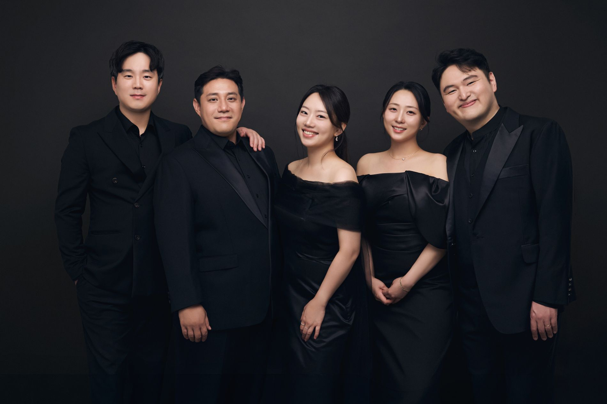
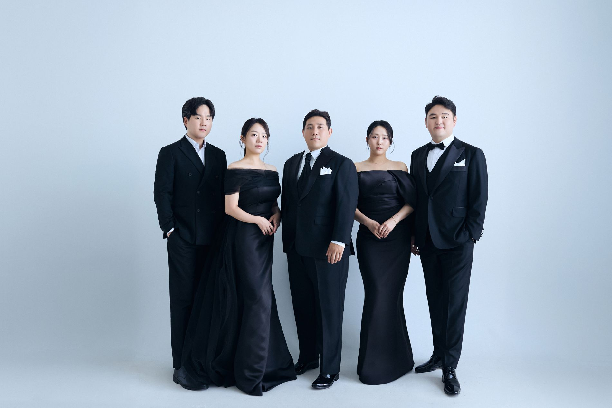
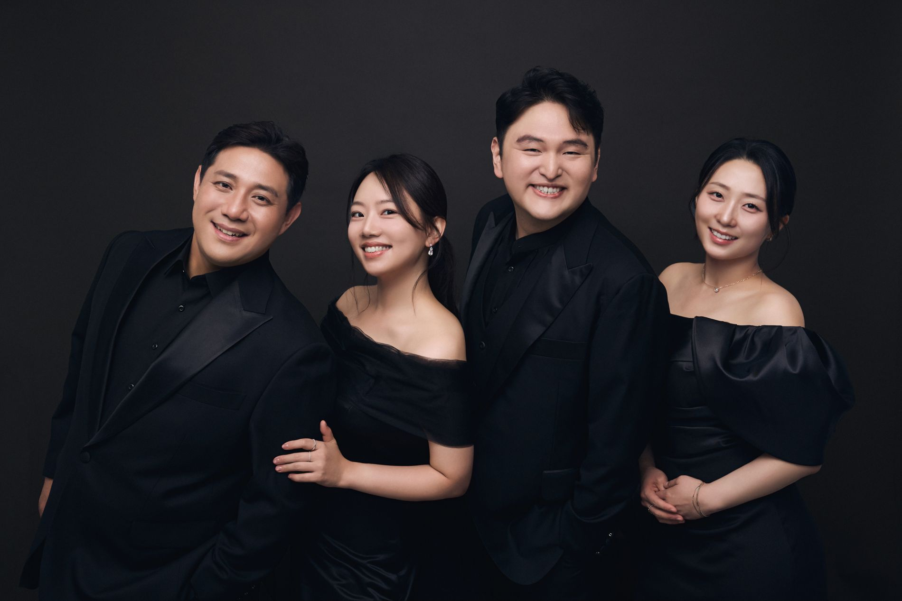
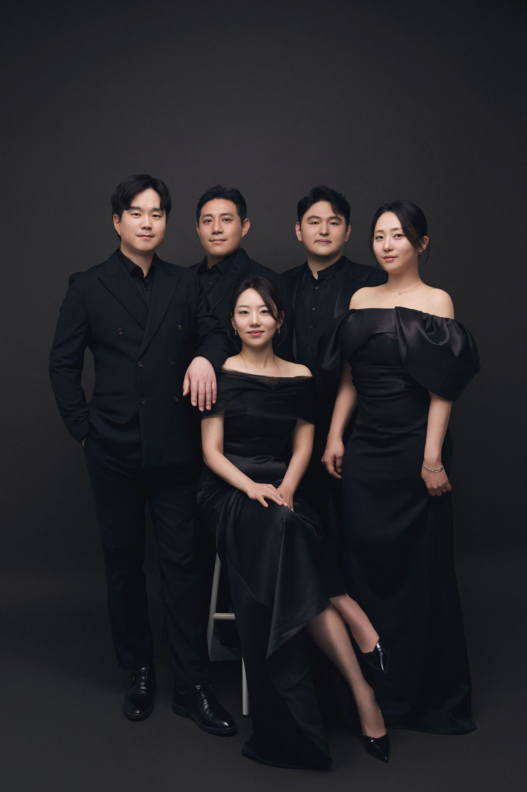
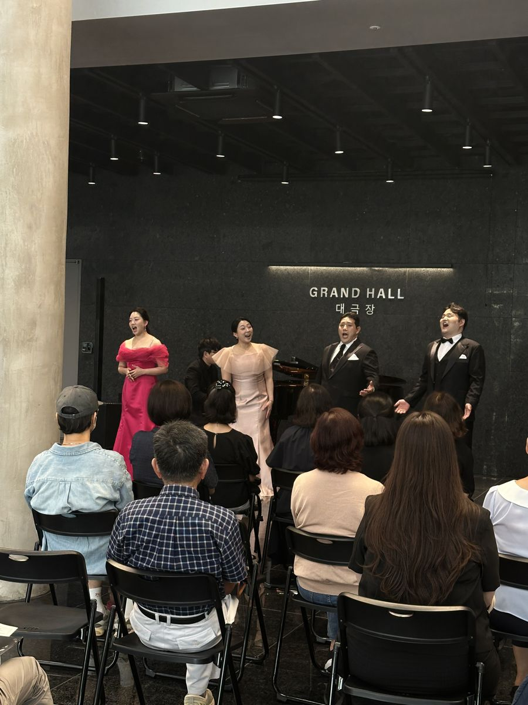

Daegu · ItaliaAmico più che amico.





Amicone Opera Singers — Daegu · Italia
About
아미코네(Amicone)는 이탈리아어 ‘아미코(amico, 친구)’에서 나온 말로, 진심을 나누는 절친한 친구를 뜻합니다. 이탈리아에서 성악을 함께 공부하며 음악과 삶의 깊은 교감을 나눈 성악가들이 모여 결성했습니다. 소프라노·메조소프라노·테너·바리톤과 피아노(오페라 코치)로 이루어진 다섯 목소리가 각자의 색으로 하나의 소리를 만듭니다.

On StageAmico più che amico.
친구보다 더 가까운 친구 — 음악으로 맺어진 진실한 우정이 아미코네의 중심입니다.
로비콘서트 ‘그대, 꽃 피우리라’ · 2026. 9. 3 · 수성아트피아 대극장 로비
Ensemble